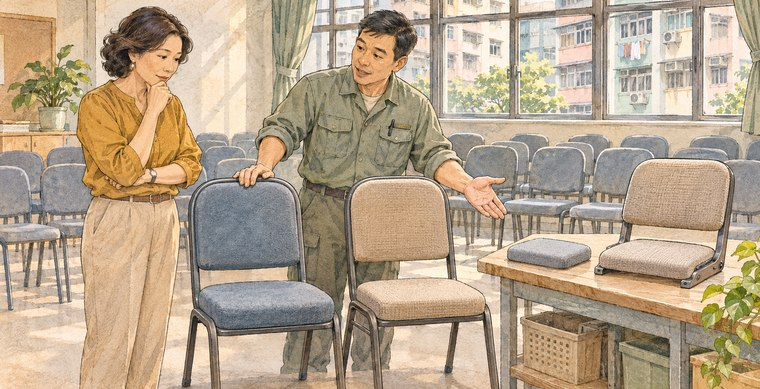

SUS-10 · 香港 · 10–15 分鐘 · 可持續發展 · 可維修性 · 循環採購
椅子要維修，該換哪個部件？

新聞裏
2024年11月6日，香港特區政府在答覆立法會時，介紹了家具轉售、交換、捐贈及翻新的渠道，並鼓勵重用。
這些背景資料並未提供下述虛構椅子採購的任何實測效益。
課堂決定
虛構的課堂情境。 香港一個社區會議場地需要添置40張椅子，供新房間使用。場地不會棄置任何仍可使用的椅子。場地已了解合適的二手貨源及借用安排，但兩者均無法滿足新房間啟用時的需要。
兩款入圍椅子均符合相同的安全、舒適度、清潔、外觀及預定用途要求，並已通過獨立查核。兩款都在預算之內，均有書面列明的五年零件供應及維修服務安排，亦備有合乎專業要求的維修指引。
修復報價已包括零件、人工、收送服務，以及妥善處理拆下的部件。兩款椅子的預計維修時間相若；場地已有撥款備置後備椅子，維修期間仍可維持所需座位數目。日常保養及安全檢查仍不可少。本習題中，正常磨損不屬保用索償範圍。
| 比較 | A · 可更換整組椅座 | B · 可單獨更換坐墊 |
|---|
| 每張椅子的購置價 | HK$500 | HK$550 |
| 購置40張椅子 | HK$20,000 | HK$22,000 |
| 僅坐墊磨損時的修復方式 | 更換整組椅座，保留椅架 | 只更換可拆式坐墊，保留椅座支承件及椅架 |
| 每次符合條件的修復總價 | HK$300 | HK$100 |
B 的購置費多2,000港元，但每次符合條件、僅因坐墊磨損而進行的修復可節省200港元。兩款椅子都可維修，出現這類磨損時都無須棄置椅架。
以固定價格的港元比較五年成本，不計兩款之間的融資或折現差異。其他保養費用相同。重大結構維修不在比較之列；不論選哪一款，不安全的椅子都須停用，並由具備適當能力的人員評估。
你的決定你會訂購哪款椅子？使用期間要出現甚麼情況，多付的2,000港元才值得？甚麼證據會令你改變決定？
第二輪 · 多了一項資料
場地找到40張同類椅子過去五年的使用及保養紀錄。 有十二次修復是為了處理坐墊磨損，當時椅架及椅座支承件仍可使用。 這是12次修復，並不是棄置了12張椅子，也不是發生了結構故障。
員工確認，兩份報價所列的修復程序和零件安排均適用於這種僅涉及坐墊的磨損。兩款擬購椅子的預定用途及耐磨規格相若，但不能確定實際故障率是否相同。
若再出現12次這類修復，A 的成本為20,000港元 + 12 × 300港元 = HK$23,600。B 的成本為22,000港元 + 12 × 100港元 = HK$23,200。在這個情景下，B 便宜400港元。
紀錄顯示這個場地的椅子有哪些部件出現磨損。這並非隨機樣本，也不保證日後會有同樣多的修復。
你的決定這些紀錄足以支持多付這筆錢嗎？選擇 A 或 B，指出一項可保留的部件，以及一項要實現維修效益所需的實際條件。
按磨損部件選擇設計
新資料的重點不只是椅子需要保養，而是坐墊磨損時，其他部件仍可使用。B 可同時保留椅座支承件和椅架；A 也保留椅架，但要更換範圍較大的組件。
過往的磨損情況令選擇 B 更有根據，但不能據此確定新款椅子的實際表現。兩款仍然都是合理的可維修選擇。
找出成本分界點
把多付的2,000港元除以每次符合條件的修復所節省的200港元，得出10次。修復10次時，兩款的購置及修復總成本同為23,000港元。在這項比較中，只有超過10次，B 的成本才較低。
修復十二次時，B 在這個情景下可少花400港元，並非保證可以省下這筆錢。計算的是修復次數，而非涉及多少張不同的椅子，也不能預測使用壽命或碳排放。
可維修性有賴維修服務各環節配合
較小的替換部件要發揮作用，前提是合適的零件、指引及具備適當能力的維修服務持續可得，價格和所需時間也要可接受。應記錄實際故障類型、修復成本、周轉時間及之後還能使用多久。
部件可以拆卸，不代表未受訓的人可以安全維修，也不代表可隨意找其他部件替代。不要只為達到某個數字門檻而棄置仍可使用的部件。
作選擇，不必虛構環境評分
如果坐墊磨損反覆出現，B 的設計便切合這種可能情況，每次這類修復都能保留更多仍可使用的物料。如果符合條件的修復不多，或維修服務的假設有變，A 可減少初期資金支出。
更換的部件較小，並不等同已作全生命週期環境評估。個案並無提供重量、生產影響或棄置結果。不要聲稱有12張椅子免於送往堆填區，也不要為減排效益附上數字。
教師說明
請學生指出可保留的部件，以及維修得以實行的條件，而不只是貼上「環保」標籤。要讓 A 仍是可信的選項：它也能保留椅架，並有書面列明的維修支援。
可用以下情景作敏感度分析：若有四次符合條件的修復，A 的成本為21,200港元，B 為22,400港元，A 便宜1,200港元。這個情景進一步說明，過往紀錄可供採購決定參考，卻不能決定採購結果。
教學目標是探討如何以保養安排支援部件層面的循環採購，而非只談回收，或聲稱所有模組化家具都較耐用。安全及維修服務方面的資料均為個案設定，並非真實的維修指引或產品認證。
第二輪
場地找到40張同類椅子過去五年的使用及保養紀錄。 有十二次修復是為了處理坐墊磨損，當時椅架及椅座支承件仍可使用。 這是12次修復，並不是棄置了12張椅子，也不是發生了結構故障。
員工確認，兩份報價所列的修復程序和零件安排均適用於這種僅涉及坐墊的磨損。兩款擬購椅子的預定用途及耐磨規格相若，但不能確定實際故障率是否相同。
若再出現12次這類修復，A 的成本為20,000港元 + 12 × 300港元 = HK$23,600。B 的成本為22,000港元 + 12 × 100港元 = HK$23,200。在這個情景下，B 便宜400港元。
紀錄顯示這個場地的椅子有哪些部件出現磨損。這並非隨機樣本，也不保證日後會有同樣多的修復。
你的決定這些紀錄足以支持多付這筆錢嗎？選擇 A 或 B，指出一項可保留的部件，以及一項要實現維修效益所需的實際條件。